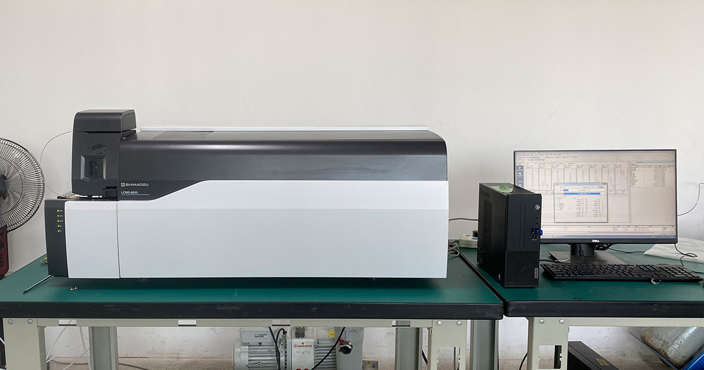
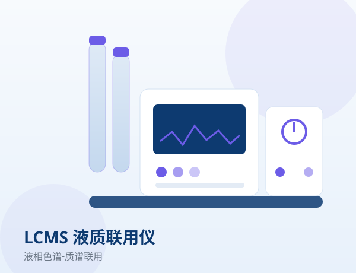
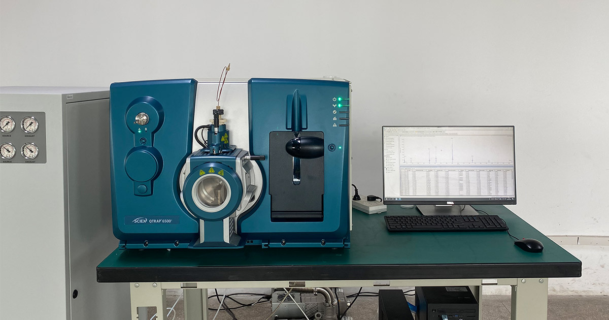
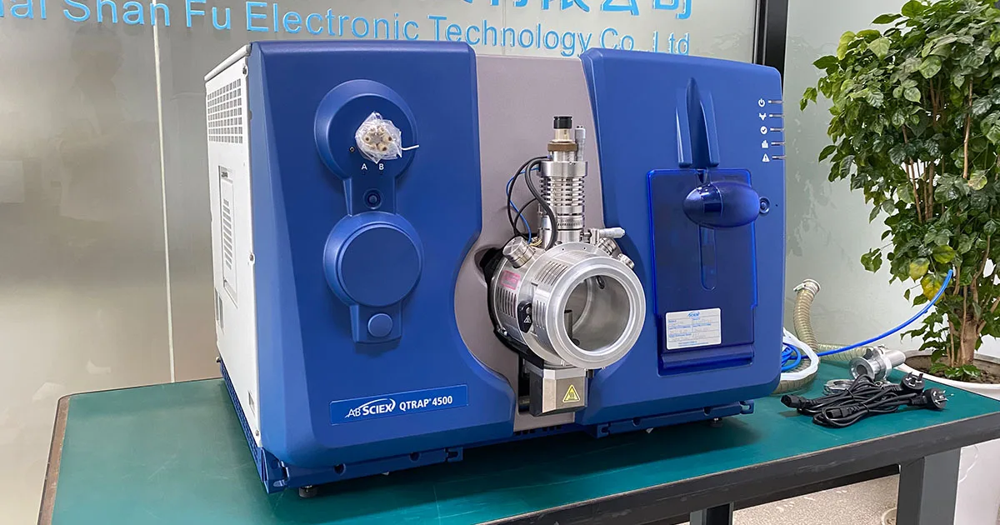
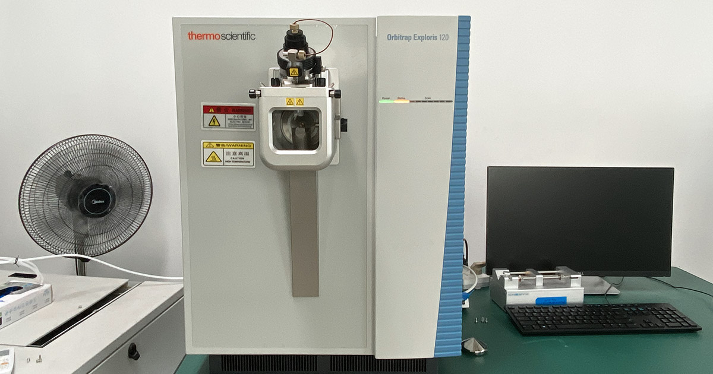
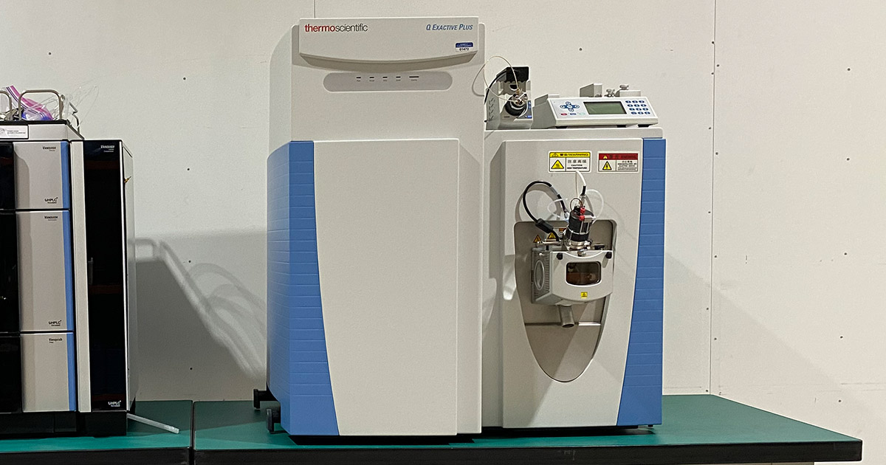
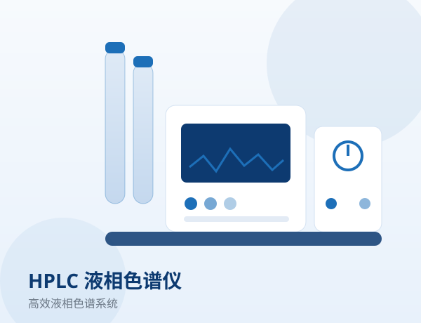

岛津 Shimadzu LCMS-8050 三重四极杆液质联用仪
上海善福二手分析仪器供应岛津 Shimadzu LCMS-8050 三重四极杆液相色谱-质谱联用仪（LCMS/MS），具备高扫描速度与宽线性动态范围，适合农兽药残留、非法添加、生物样本与代谢物等痕量分析。本台仪器经检测，成色良好、运行稳定，可提供检测报告、安装调试与操作培训。
可选品牌：岛津
免费询价主要配置与参数
| 仪器类型 | 三重四极杆液相色谱-质谱联用仪 LCMS/MS（Shimadzu LCMS-8050） |
|---|---|
| 质谱类型 | 三重四极杆（QqQ），高灵敏定量 |
| 质量范围 | |
| 扫描速度 | |
| 离子源 | |
| 液相配套 | 可配套 Shimadzu Nexera / 其他液相色谱系统 |
| 状态 | 成色良好，可出具检测报告 |
| 质保 | 可提供质保、安装调试与操作培训 |
产品详情
本台 Shimadzu LCMS-8050 于近期到货，整机外观整洁、运行状态稳定。上海善福已对其进行检测，确保交付即可投入日常检测工作。
LCMS-8050 采用三重四极杆架构，具备高灵敏度与宽线性动态范围，配合超快扫描与极性切换，适合大批量样品的高通量定量分析。
该机可配套 Nexera 等 UHPLC 系统使用，覆盖农兽药残留、生物样本与代谢物等痕量分析，在第三方检测与制药领域应用广泛。
作为二手现货机型，支持预约到场看机与提前询价。
上海善福可提供包括安装调试、操作培训、质保与后续维修在内的全链路服务，帮助客户快速搭建或升级液质检测平台。
相关产品

二手液质联用仪
液质联用 LCMS三重四极杆液质，适用于定量与残留分析。
查看详情
AB SCIEX QTRAP 6500+ 三重四极杆-线性离子阱液质联用仪（二手现货）
液质联用 LCMS2026 年 8 月到货，SCIEX QTRAP 6500+ 液质联用仪，二手现货，MRM 高灵敏定量与离子阱定性兼顾。
查看详情
AB SCIEX QTRAP 4500 液质联用仪
液质联用 LCMS三重四极杆-线性离子阱复合质谱，定量定性兼备。
查看详情
赛默飞 Thermo Fisher Orbitrap Exploris 120 高分辨液质联用仪
液质联用 LCMSOrbitrap Exploris 120 轨道阱高分辨液质联用仪（LC-HRMS），高分辨与高质量精度兼备，适合未知物筛查与痕量定量。
查看详情
赛默飞 Thermo Fisher Q Exactive plus 四极杆-轨道阱高分辨液质联用仪
液质联用 LCMSQ Exactive plus 四极杆-轨道阱高分辨液质联用仪（LC-HRMS），高分辨与高质量精度兼备，适合未知物筛查与痕量定量。
查看详情
二手液相色谱仪
液相色谱 HPLC二元/四元泵、自动进样、柱温箱成套配置，状态良好。
查看详情相关服务
与本文相关的仪器服务，点击了解详情。